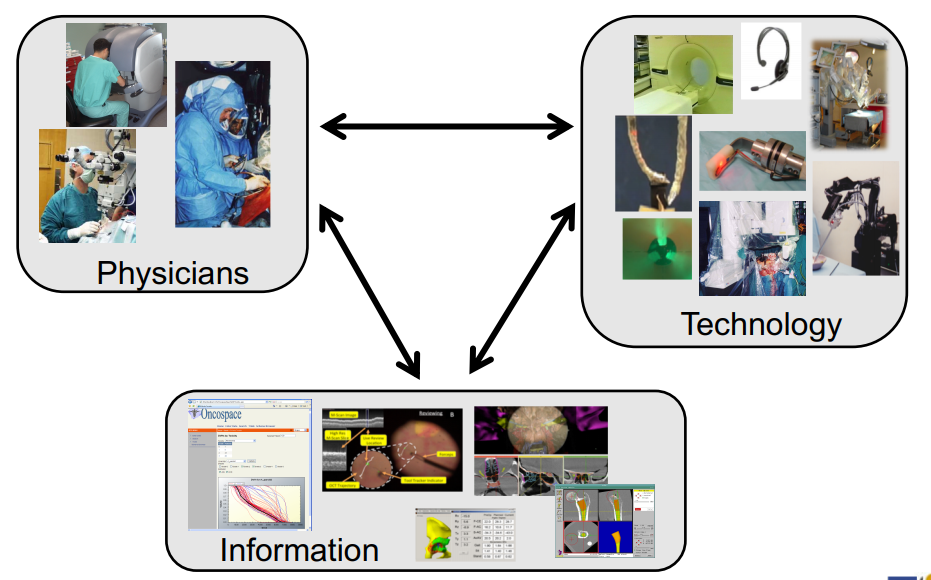
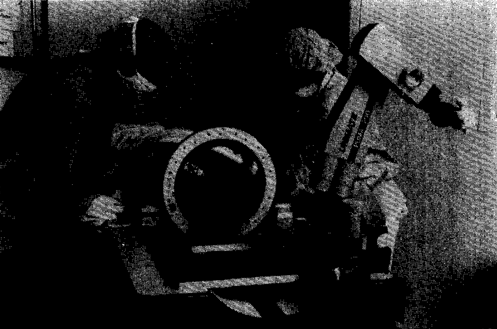
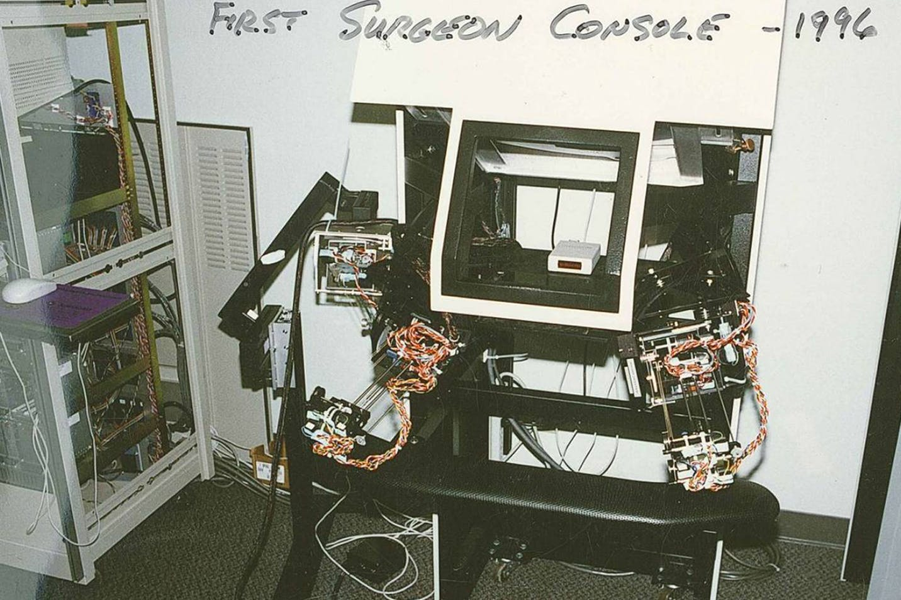
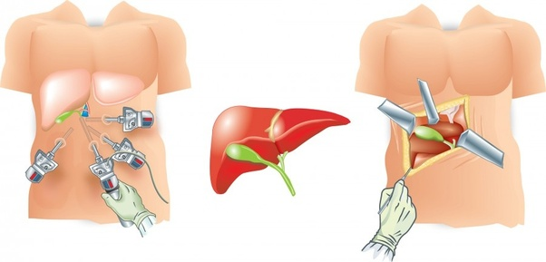
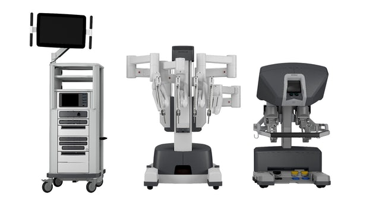
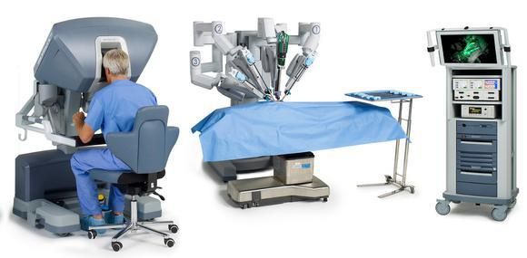

Since I am doing an internship at Intuitive Surgical Inc., a lot of people have asked me what exactly a surgical robot is. Many think having a robot in the operating room (OR) is a scary thing. "Can robots actually replace the surgeons?", I am asked frequently. The answer is of course no, at least not in the near future. But then what is the point of the surgical robots? Why are there many researches and startups in this field? Having sat through many talks by speaker from the management of Intuitive, such as CEO Gary Guthart, President of Intuitive Foundation Catherine Mohr and Chief Medical Officer Myriam Curet, I have learned a lot and I will try to share the knowledge in this blog.
The Three-Way Partnership
Prof. Russ H. Taylor, whom people honored as "the grandfather of surgical robotics", usually started his course Computer Integrated Surgery (CIS) at JHU this way:
"Surgical robotics is part of the three-way partnership."
The three pieces - the physicians, technology and information - interact with each other in the OR. Prof. Taylor believes that this three-way partnership paradigm has not changed since the 27th century when Imhotep cured the Egyptians, except that the emerging technologies, such surgical robotics, have made this loop more effective.
 Three-way partnership, quote from CIS class of Prof. Taylor.Clearly, the goal of the surgical robotics is not to replace the physicians, as what many people thought. It is to improve the work flow by empowering the physicians, and thus improving the patient outcome. And patient outcome, it is what people, either researchers or employees at medical device companies, hold paramount. How is the surgical robot extending the capability of surgeons? Let's dive in the history and find some examples.
The first surgical robot
The first publicly reported robot-assisted procedure was by a group of researchers at UBC just at 1983 [1]. Dr. James McEwen and other collaborators co-invented this idea of using an ARTHROBOT to assist orthopedic surgeries. They used the robot as an assistant to manipulate the knee of the patient and pick up surgical tools. The advantage of using a robot is that it will never get tired or bored. They are controlled by the surgeon through VOICE (yes, 30 years ago, voice command was already used). You can find an interesting video about it below.
Video of ARTHROBOT.However, the majority of the literature doesn't consider it as the first medical robot because the robot did not perform any invasive tasks. Two years later, the first robot-assisted and robot-invasive surgery was done in 1985. Many think the robot used was the PUMA 560 robot arm. However, according to the original paper [2], it was instead a PUMA 200 industrial robot (it is very interesting to see how easily history can be miswritten in 30 years).
The biospy task was to insert a needle along a straight line through the a small opening of the patient skull until reaching the target deep in the brain. The authors were mainly concerned with the precision required by this procedure. If the needle accidentally strayed away from the desired path, there will be irreversible damage on the brain functionality. Therefore, robots were introduced to provide the stability and precision which human hands can hardly achieve.
Brain biopsy illustration[3].There were no surgical robots in the 80s, but industrial robots were rising at that time due to the concept of Computer Aided Manufacturing (CAM). The accuracy of PUMA 200 was 0.05 mm, significantly smaller than the physiological tremor of human hands. The spring-applied solenoid-released brakes can stop the motion immediately if anything went wrong. Even though CT was still relatively new by then, the authors saw potential of using it for 3D visualization. So the surgeons mounted the patient's head on the CT bed, same as where the robot is attached to. The robot successfully performed the biopsy task with the guidance of CT volume. There is not much media available about the surgery. I found a scan of the image in the original printed paper of the OR setup. Though not very clear, you can still see how the OR is configured.
 The first robot-assisted procedure with PUMA 560 (COPYRIGHT IEEE) [2].Intuitive Surgical and da Vinci Surgical Systems
Fast forward to today, many startups have arisen and failed. The most famous one was ROBODOC, the first FDA approved surgical robot. Unfortunately, it did not find the suitable market for itself and eventually phased out (it becomes THINK Surgical later). On the other hand, some are really successful and still growing. For example, Intuitive Surgical Inc., is one of leaders in the market now. Its da Vinci systems, 4986 of them are deployed worldwide. More 1 million procedures were performed in 2018. What's more, the company just saw a 17% growth in procedures and 24% increase in the sales of da Vinci Systems in the past quarter compared to 2018. It is currently being used for general surgeries, urology surgeries and also TORS. The advantages of surgical robots has clearly been proven by Intuitive.
The da Vinci surgical system started around 30 years ago in 1993 as a project funded by DARPA within the Stanford Research Institute. It was originally designed for tele-present surgery for field service such that surgeon can treat veterans without being present in the frontier. Later, this concept was then proven to be not as beneficial as what DARPA expected. However, this project laid groundwork for what became da Vinci today.
 The first surgeon console produced in 1996 [4].Later a company was formed around this project, and the da Vinci system was introduced in 1999. The original idea of tele-presence has shifted to what we call teleoperated surgery now. The goal is to resolve the inherent conflict between surgeon experience and patient outcome according to the CMO of Intuitive, Myariam Curet.
"Open surgery allows surgeons to see easily and operate easily. But the patients suffers. Laparoscopic surgery is great for the patient due to the minimum invasiveness, but stresses the surgeons due to the inverse of motion, awkward hand-eye coordination and poor visualization."
Below you can find a picture of laparoscopic surgery versus open surgery. On the left, you can see laparoscopic surgery only cuts small incisions on the patient body. On the right, the open surgery cuts the patient belly wide open, but is obviously easier for the surgeons because the organ is exposed completely. But the introduction of da Vinci system resolves this paradox.
 Laparoscopic surgery vs Open Surgery [5].Taking the fourth generation of the da Vinci robot as an example, you can find the vision system, patient side cart and surgeon console below. In the OR, the patient side cart is placed beside the patient bed, and the surgeon console is placed at another place in the room. The idea is that the surgeon will sit in the surgeon console, and control the arms on the patient side cart remotely. The surgery will be streamed into the surgeon console real-time with stereo display. The nurses can see what the surgeons see through the vision system and interact with the surgeon when necessary.
  The da Vinci X system and the OR layout [6].This gives the surgeon several advantages:
- motion scale: the motion of surgeon's hand is scaled down such that the motion of the surgical tools can be more precise and less jerky.
- natural pose: before da Vinci, surgeons usually stand beside the patient bed, hold their arms tight and watch the 2D screen. With the introduction of surgeon console, surgeons can sit there naturally with arm wrest and watch stereo display for 3D perception.
- dexterity: traditional laparoscopic tools have very steep learning curve. However, the tools that Intuitive provides have 7 degree of freedom and can be controlled with wrist motion, which is much more intuitive.
Intuitive is also expanding its area of expertise, from single port surgery to diagnosis with the introduction of ION, from surgeon skill assessment to virtual reality training. As what the CEO of Intuitive, Gary Guthart said, "By integrating human understanding, smart systems, imaging, instruments, and actionable insights, we aim to build solutions that help advance surgical care."
Emerging Competitors
Of course, Intuitive Surgical is not only company currently in the market. CMR Surgical, is targeting the same laparoscopic market with its modular arms. Auris Health introduced its Monarch system for peripheral bronchoscopy, competing with ION for diagnosis service. Medtronic offers its Mazor X Stealth for spine surgery, and Stryker has Mako for joint replacement. Intuitive has proven the concept of surgical robotics, and the more and more health-care providers are joining the competition.
Technology is truly transforming the industry, and robots are playing an essential role to improve the patient's care.
http://surgrob.blogspot.com/2015/07/surgical-robots-archives-worlds-first.html
Kwoh, Yik San, et al. "A robot with improved absolute positioning accuracy for CT guided stereotactic brain surgery." IEEE Transactions on Biomedical Engineering 35.2 (1988): 153-160.
https://newatlas.com/smart-biopsy-needle-danger/47492/
https://www.quora.com/How-laparoscopic-surgery-is-better-than-open-surgery
https://www.intuitive.com/en-us/about-us/company
https://www.intuitive.com/en-us/products-and-services/da-vinci/systems